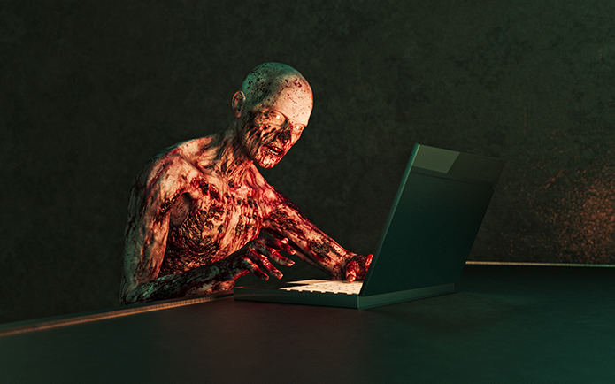
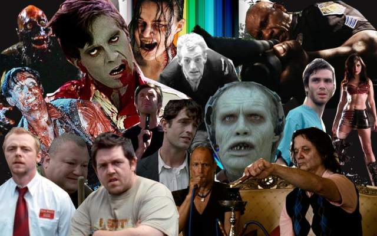

To compare zombies to their rivals in the monster-movie pantheon, vampires and werewolves symbolise the thrill and the romance of having superhuman strength and no conscience − hence the Twilight and True Blood franchises. But there’s nothing glamorous about being a zombie. Unlike vampires and werewolves, they’re not frightening because of how powerful they are. They’re frightening because of how dismal it would be to become one yourself. Another difference is that werewolves and vampires are content to share the planet with the rest of us.
They might tuck into the odd innocent bystander, but Dracula and the Wolfman don’t threaten our way of life. In Romero’s films and their many imitators, however, the monsters are either the cause or a symptom of a complete societal breakdown. When a botched science experiment, a radiation leak, or a glowing meteorite begins zombifying the populace, the result is a pandemic which leaves the world in chaos. Whether this scenario is played out in 28 Days Later, Zombieland or The Walking Dead, the rule of law ceases to exist. Humanity’s last survivors are forced to forage for food in a dystopian desert, while trying to avoid becoming food themselves.
It can’t be a coincidence, then, that zombies are in vogue during a period when banks are failing, when climate change is playing havoc with weather patterns, and when both terrorist bombers and global corporations seem to be beyond the reach of any country’s jurisdiction. It can’t be a coincidence, either, that the fourth season of The Walking Dead got off to its hugely successful start just weeks after the United States federal government shut down.
“We’re living in very uncertain times,” says Max Brooks, who wrote the book on which the World War Z film is based. “People have a lot of anxiety about the future. They’re constantly being battered with these very scary, very global catastrophes. I think a lot of people think the system is breaking down and just like the 1970s, people need a ‘safe place’ to explore their apocalyptic worries. They can’t read stories about real plagues or nuclear war. That’s too scary. That’ll make them turn away. Zombie stories give people the opportunity to witness the end of the world they’ve been secretly wondering about while, at the same time, allowing themselves to sleep at night because the catalyst of that end is fictional.”
Zombies embody the great contemporary fear − and, for some people, the great contemporary fantasy − that we’ll soon be surrounded by ravenous strangers, with only a shotgun to defend ourselves. Compared to that, facing a werewolf or a vampire is a breeze.